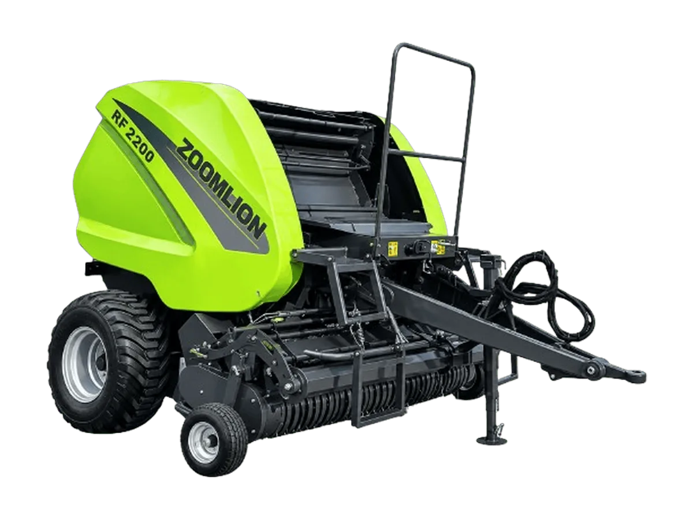

Mesin Baler
Zoomlion Round Baler 9YY-2200
9YY-2200
Baler bulat (round baler) ruang tetap untuk mengepres jerami gandum, jagung, dan tanaman lain, serta hay dan hijauan pakan.
Keunggulan
- Pickup lebar 2200 mm dengan 5 baris rel pemandu yang mengikuti kontur untuk pengumpulan bersih dan efisien
- Lantai masuk mengambang hidrolik anti-sumbat dengan dua roller pengumpan spiral berpengumpanan paksa, aliran material lancar tanpa hambatan
- Drawbar dengan ketinggian yang dapat disetel: bisa berbelok dan melewati pematang tanpa melepas PTO
- Dilengkapi pelumasan otomatis dan net-wrap otomatis untuk pengoperasian yang lebih mudah
- 18 roller baja heavy-duty satu bagian tersusun spiral untuk inti bal yang padat
- Sistem net-wrap dengan penegang aktif menghasilkan bal yang rapat tanpa ujung terurai
Spesifikasi
| Model | 9YY-2200 |
|---|---|
| Dimensi (P × L × T) | 4280 × 3162 × 2560 mm |
| Berat | 4200 kg |
| Putaran PTO | 540 / 760 rpm |
| Lebar Pickup | 2200 mm |
| Pengangkat Pickup | Hidrolik |
| Jarak Tine | 66 mm |
| Jumlah Batang Tine | 6 baris |
| Jumlah Tine | 102 |
| Tipe Pengumpan | 3-Star Double-Paddle Screw Feeder |
| Jumlah Roller | 18 |
| Jumlah Pisau | 15 |
| Konfigurasi Pisau | Angkat hidrolik, dapat dilepas |
| Panjang Potongan | 65 mm |
| Ukuran Bal (Diameter × Lebar) | 1.25 × 1.23 m |
| Efisiensi Pengepresan | 500–600 bal/hari |
| Kepadatan Bal | Gandum (kadar air ≤20%) ≥130 kg/m³; Padi (kadar air ≤30%) ≥150 kg/m³ |
| Kontrol Kepadatan | Hidrolik / Mekanis |
| Sistem Kontrol | Monitor |
| Alarm Tali | LED + buzzer |
| Sistem Pelumasan | Pelumasan oli otomatis untuk rantai + gemuk otomatis untuk bearing |
| Kategori Hitch | Semi-mounted: Category 2 & Category 3; Direct Pull |
Tanya harga & ketersediaan unit
Tim kami siap membantu memilih unit yang sesuai kebutuhan lahan Anda.